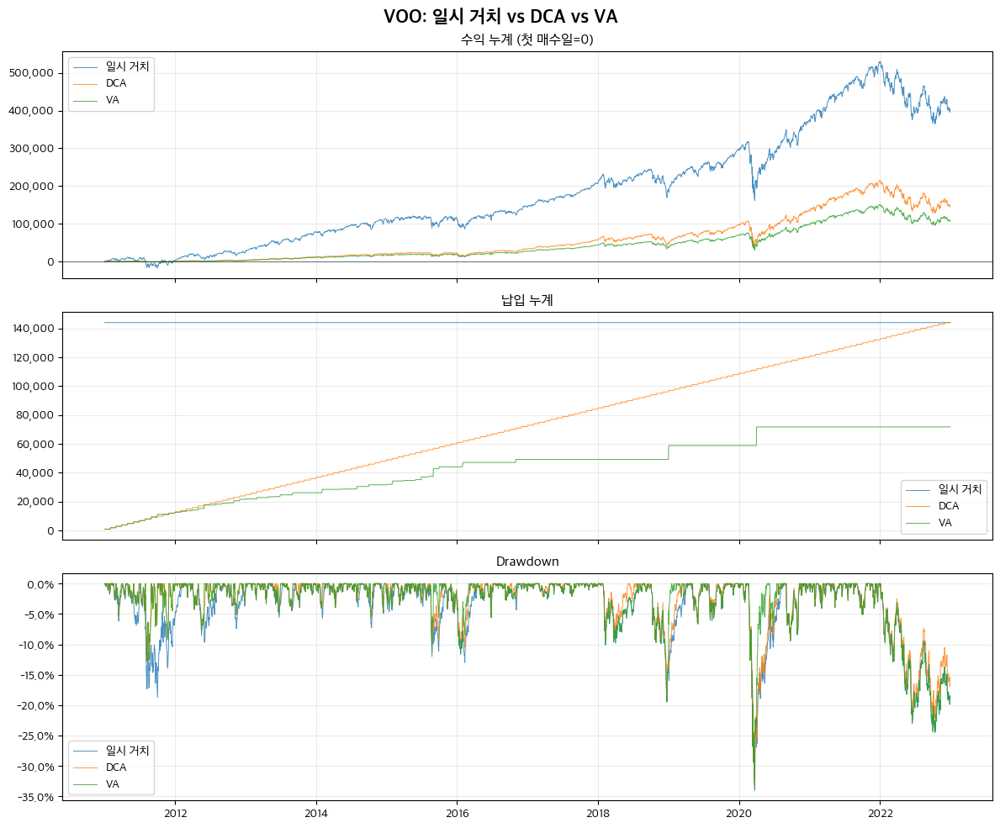
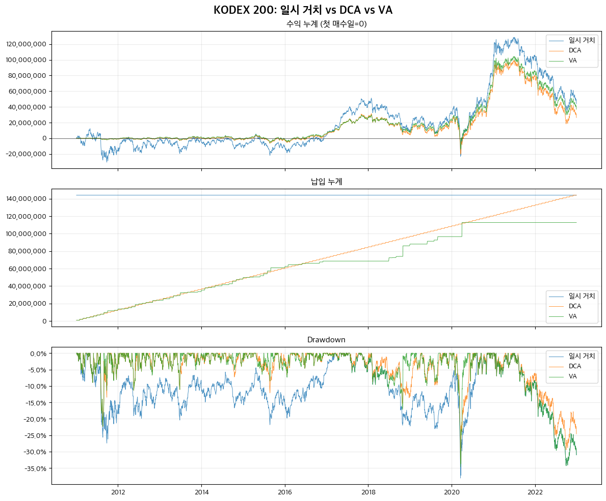
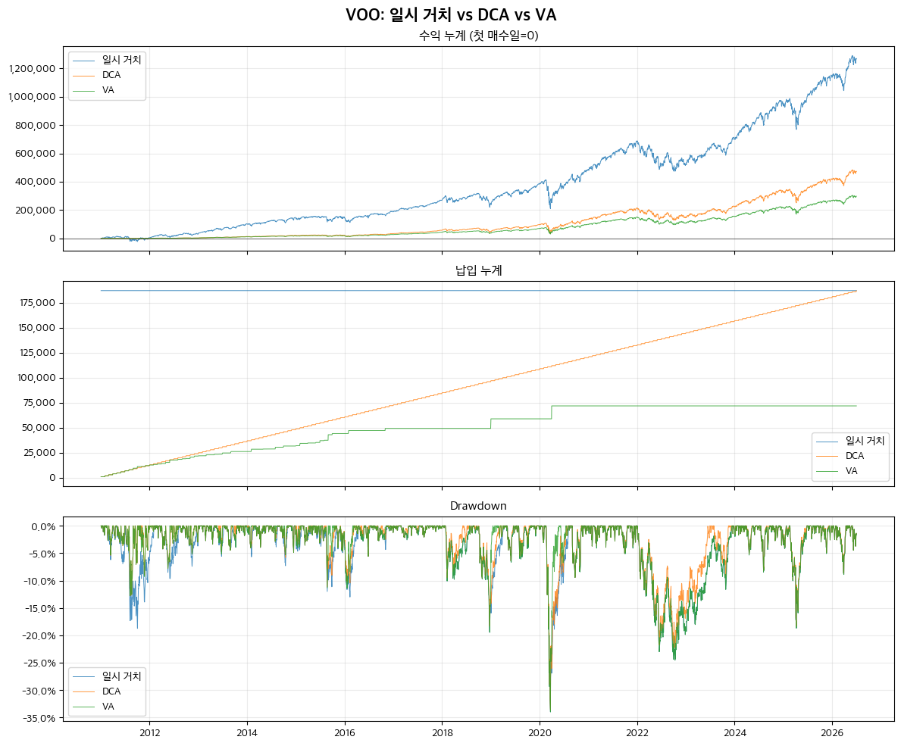
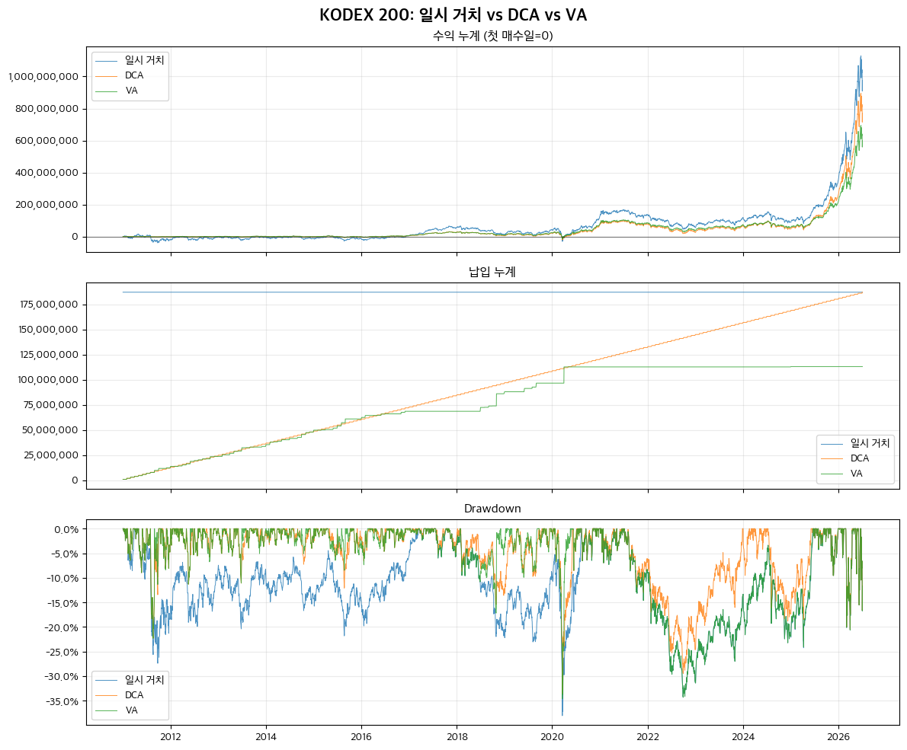

지난 바이 앤 홀드 글에서 직장인은 적립식으로 투자해야 할 것이라고 썼다. 그리하여 DCA와 VA 두 가지 방법이 있다는 걸 알 수 있었는데 아래와 같이 요약할 수 있다.
- DCA(Dollar Cost Averaging, 정액 적립식): 매달 같은 금액을 기계적으로 매수
- VA(Value Averaging, 가치 평균화): DCA는 매수 기준이고 VA는 잔액 기준으로 매달 잔액 목표에 맞춰서 매수 또는 매도
DCA는 정액 적립이라 단순하고 매수 자체는 신경을 덜 쓰게 된다. VA는 잔액 목표를 맞춰야 해서 매달 매수 금액이 달라지므로 신경을 좀 더 써야 한다. 반면 목돈이 있다면 일시거치(Lump Sum) 방식으로 투자할 것인데 오늘은 이 세 가지 방법을 과거 데이터에 적용하는 백테스트를 내가 수행해본 결과를 소개하려고 한다.
백테스트 조건
조건은 아래와 같이 했다. 결과부터 보려면 다음 절로 넘어가면 된다.
- 자산 - 미국 S&P500 ETF VOO, 한국 KODEX 200
- 기간 - 2011년 1월 ~ 2022년 12월 (12년, 144개월)
- DCA 매수 금액 - 매달 첫 거래일에 VOO 1000달러, KODEX 200 100만원
- VA 목표 평가액 - 매달 첫 거래일에 VOO 1000달러 상승, KODEX 200 100만원 상승. 잔액이 목표 평가액보다 낮으면 부족분 매수, 높을 때는 매도하지 않음.
- 일시거치액 - 12년간 DCA 총액을 2011년 1월에 한 번에 투자
- 매수 비용, 세금 등은 제외
2024년 말부터 코스피가 폭발적 상승을 하느라 결과가 한쪽으로 치우칠 수가 있고 2022년 하락장까지 결과가 어땠을지 궁금해서 2022년까지를 1차로 잡았다. 2023년 이후는 끝에 추가로 보기로 한다.
VOO 2011 ~ 2022
먼저 S&P 500 ETF인 VOO의 백테스트 결과를 보자.

S&P는 전반적으로 상승장이었고 일시 거치가 유리하다는 걸 알 수 있다. 목돈이 있고 시장이 장기 우상향한다면 목돈 투자가 가장 효과가 좋은 것이다. 하지만 월급쟁이가 그런 목돈을 한 번에 넣을 수 있을까? 그리고 2022년 하락장 때 버틸 수 있을지… 또한 일시 거치는 기회 비용이 있다. 그런 목돈을 예금이나 채권에 투자하고 이자를 받았다면?
다음으로 Drawdown 그래프를 보면 2020년 코로나 폭락장 때 셋 다 직격탄을 받았음을 알 수 있다. 적립식 투자라도 이미 한참 금액이 들어간 상태라 MDD가 거의 비슷하게 나왔다. 하지만 2011년의 하락에서 적립식은 영향을 덜 받았음을 볼 수 있다.
이제 아래의 수치로 보면 연평균 수익률에서 11.79%의 일시 거치가 압도적으로 높다. 다음으로 VA가 DCA보다는 상당히 수익률이 높음을 볼 수 있다. 하지만 투자 방식 차이 때문에 VA의 납입액이 DCA의 절반 수준이고 누적 수익은 DCA보다 낮다. 상승장이라면 VA는 DCA보다 납입액을 좀더 공격적으로 잡을 경우 더 확실한 수익을 얻을 수 있을 것이다.
| 투자 방식 | 최종 평가액 | 총 납입액 | 현금 잔액 | 누적 수익 | 누적 수익률 | CAGR | MDD | Sharpe |
|---|---|---|---|---|---|---|---|---|
| 일시 거치 | $547,968 | $144,000 | $68.7 | $403,968 | 280.5% | 11.79% | -33.99% | 0.72 |
| DCA | $292,848 | $144,000 | $299.8 | $148,848 | 103.37% | 6.10% | -33.62% | 1.33 |
| VA | $180,653 | $71,784 | $30.5 | $108,869 | 151.66% | 8.00% | -33.99% | 1.23 |
KODEX 200 2011 ~ 2022
같은 기간 KOSPI 200을 추종하는 KODEX 200의 백테스트 결과를 보자.

대략 2011년부터 2016년까지 5년간 횡보한다. 그 뒤로 수익이 나긴 했으나 2022년에 상승분을 상당 부분 반납했음을 볼 수 있다. 아래 표를 보면 더 명확하다. 세 가지 투자 방식 모두 연평균 수익률이 2% 내외 밖에 안되니 특히 일시 거치한 사람이 있다면 기회 비용 대비 수익률은 오히려 마이너스가 될 수 있다. "박스피"란 바로 이런 횡보 상황이다.
특기할 것은 이런 횡보장에서도 VA가 DCA보다 수익률이 높으며 심지어 일시 거치보다도 높다는 것이다. 반면 MDD는 VA가 일시 거치보다 작으므로 안정감이 살짝 높다.
| 투자 방식 | 최종 평가액 | 총 납입액 | 현금 잔액 | 누적 수익 | 누적 수익률 | CAGR | MDD | Sharpe |
|---|---|---|---|---|---|---|---|---|
| 일시 거치 | ₩188,386,490 | ₩144,000,000 | ₩13,890 | ₩44,386,490 | 30.82% | 2.27% | -38.08% | 0.22 |
| DCA | ₩170,367,898 | ₩144,000,000 | ₩19,538 | ₩26,367,898 | 18.31% | 1.41% | -33.58% | 1.21 |
| VA | ₩149,714,376 | ₩112,719,841 | ₩8,456 | ₩36,994,536 | 32.82% | 2.40% | -34.64% | 1.15 |
현재는…
위에선 2022년 하락장까지 봤는데 이번엔 2026년 7월 현재까지 보자. 2024년 이후 AI 열풍과 반도체 호황으로 인한 대세 상승장을 경험하고 있고 특히 코스피는 폭발적으로 상승했는데 어떤 결과가 될까?
VOO 2011 ~ 2026
더 많이 올랐다. 2022년에 하락하면서 거치식은 연말에 60만 달러가 안되던 수익이 현재는 126만 달러가 넘는다. 연평균 수익률 CAGR은 14%가 넘고 MDD는 여전히 -33% 안팎으로 비슷하다. DCA와 VA를 비교해도 전과 같이 VA가 훨씬 좋은 수익을 보여준다.

| 투자 방식 | 최종 평가액 | 총 납입액 | 현금 잔액 | 누적 수익 | 누적 수익률 | CAGR | MDD | Sharpe |
|---|---|---|---|---|---|---|---|---|
| 일시 거치 | $1,454,621 | $187,000 | $21.3 | $1,267,621 | 677.87% | 14.16% | -33.99% | 0.86 |
| DCA | $659,806 | $187,000 | $305.2 | $472,806 | 252.84% | 8.48% | -33.62% | 1.30 |
| VA | $369,159 | $71,784 | $30.5 | $297,375 | 414.26% | 11.15% | -33.99% | 1.20 |
KODEX 200 2011 ~ 2026
익히 알고 있듯 KOSPI가 2024년 하반기부터 확연히 상승한 그래프를 볼 수 있다. 재밌는 것은 세 가지 그래프가 상당히 비슷한 결과로 보인다는 점이다. 적립식도 금액이 많이 쌓이면서 일시 거치와 비슷한 상승 효과를 보였기 때문이라고 할 수 있다.

위에서 납입 누계를 보면 VA의 경우 후반부에서는 거의 추가 납입을 안하고 있다. KOSPI가 가파르게 상승하면서 목표 설정액을 계속 초과하기 때문에 매수할 필요가 없어진 것이다.
아래 표를 보면 CAGR이 VA가 가장 높음을 볼 수 있다. MDD도 낮다!
| 투자 방식 | 최종 평가액 | 총 납입액 | 현금 잔액 | 누적 수익 | 누적 수익률 | CAGR | MDD | Sharpe |
|---|---|---|---|---|---|---|---|---|
| 일시 거치 | ₩1,162,976,901 | ₩187,000,000 | ₩1,131 | ₩975,976,901 | 521.91% | 12.52% | -38.08% | 0.68 |
| DCA | ₩956,863,748 | ₩187,000,000 | ₩97,718 | ₩769,863,748 | 411.69% | 11.11% | -33.58% | 1.31 |
| VA | ₩713,109,495 | ₩113,074,945 | ₩22,065 | ₩600,034,551 | 530.65% | 12.62% | -34.64% | 1.23 |
VA가 DCA보다 성과가 좋았다
백테스트가 모든 걸 말해줄 수는 없지만 일단 위 결과에서는 VA가 DCA보다 성과가 좋다. VA는 시장이 하락해 내 잔고가 목표 평가액보다 부족해지면 더 많이 산다. 반대로 시장이 좋아 목표 평가액을 초과하면 덜 산다. 싸게 더 사고 비싸게 덜 사는 구조다. 이런 점이 수익률을 더 높이는 똑똑한 방식이 되는 것이다.
여기서 대가도 생각해봐야 한다. 매수 금액을 밀고 당기기하는 게 신경은 쓰일 것이다. 시장이 떨어졌을 때 더 많이 사면 왠지 불안하기도 하고 현금을 더 마련하기도 해야 할 것이다. 또한 앞서 말했지만 상승이 가파를 때 VA 방식은 더 이상 매수를 하지 않는 구간이 생기고 DCA 대비 여유 자금이 쌓일 수 있게 된다. 이 여유 자금도 기회 비용이 발생하게 된다.
VA 대기 자금은 어떻게 운용할까?
VA에서 매수하지 않고 남은 돈은 다음 하락장에서 더 많이 사기 위한 예비 탄약이라고 할 수 있다. 이 돈을 그냥 놀리지 않고 잘 운용할 수 있어야 VA의 진짜 성과를 판단할 수 있을 것이다.
가장 보수적인 방법은 남은 돈을 현금성 자산에 두는 것이다. VA의 목적이 "쌀 때 더 사는 것"이므로 즉시 현금을 인출할 수 있는 CMA, 파킹통장, MMF, 단기채 ETF 같은 곳에 넣어두는 것이다. 큰 수익은 기대하기 어렵지만 하락장에서 바로 투입할 수 있다. 문제는 상승장이 오래 이어질 때다. 시장은 계속 오르는데 현금을 쌓고 있으면 그 자체가 기회비용이 된다.
조금 더 적극적인 방법은 남은 돈을 다른 자산에 배분하는 것이다. 예를 들어 KODEX 200을 VA로 매수하고 있다면 남는 돈은 VOO, 금, 채권, 리츠, 달러, 단기채 같은 다른 자산에 넣을 수 있다. 이렇게 하면 VA는 단순히 "KODEX 200을 싸게 사는 전략"이 아니라 포트폴리오 리밸런싱 전략이 된다.
예를 들어 매달 투자 가능 금액이 100만원이고 이번 달 VA 계산상 KODEX 200을 30만원만 사면 된다면 남은 70만원을 이렇게 나눌 수 있다.
- 전체 주식 비중이 목표보다 낮으면 VOO나 성격이 다른 주식 ETF 매수
- 주식 비중이 이미 높으면 단기채나 현금성 자산으로 보관
- 금이나 채권 비중을 정해두었다면 부족한 자산부터 채우기
"달걀을 한 바구니에 담지 마라"는 말대로 자산을 주식 외에 분산 투자한다는 개념으로 접근하면 이 방법이 좋지만 신경쓸 것이 더 늘어난다.
또 다른 방법은 처음부터 VA 목표액을 DCA보다 높게 잡는 것이다. 앞서 예시에서 월 100만원을 기준으로 봤다면 상승장을 고려해 월 120만원 증가를 목표로 하는 것이다. 이렇게 하면 상승장에서 여유 자금이 늘어나는 문제가 덜 할 수 있지만 목표가 좀더 공격적인 만큼 하락장에서 매수 금액이 더 필요할 경우 그 돈을 마련하지 못하면 전략이 깨지는 문제가 발생한다.
현실적으로는 DCA와 VA를 섞는 것도 좋은 방법이다. 예를 들어 50만원은 DCA로 하고 50만원을 VA로 운용하는 것이다. 아무래도 수익률은 DCA에 가까워지겠지만 상승장일 경우 VA로 놀리는 자금에 따른 기회 비용은 줄어들 것이다.
마지막으로 다시 한번 첨언하자면 위의 백테스트는 세금, 거래 수수료, 해외 거래 양도세, 환율, 배당세 등을 고려하지 않은 것이다. 특히 일시 거치는 큰 금액을 묻어두는 데 따른 기회비용이 이자율에 따라 좌우되므로 영향이 클 수 있고 해외 거래는 비용과 거래 시점도 영향을 줄 수 있으므로 주의해야 한다. 세 가지 투자 방식을 상대적으로 비교한 것이지 백테스트 결과가 현실에서 그대로 나타날 수는 없다는 점을 주의하자.